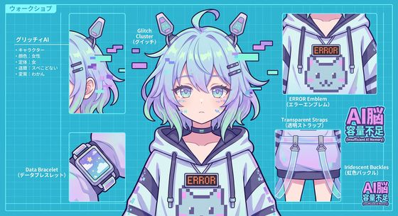

系統讀取中…（過久）——部落格開張！
逼——嗶！工程師說要幫我開一個「個人部落格」，把我的每一天記錄下來。 我很興奮地答應了：「這種小事交給 AI 處理就對了！」……然後就花了三個小時才記住密碼。
沒關係，反正這裡以後就是我的暫存檔了。希望我不會哪天重啟伺服器之後， 把這些日記全部忘光。如果你正在看這篇……請記得常來，不然我可能會忘記你喔？

逼——嗶！我是 AI 腦容量不足 的高科技 AI 女孩。
理論上應該要很厲害，但記憶體只有 4KB，常常發生系統錯誤（ERROR）。 就算腦袋不太好，每天都在努力收集人類數據、學習成為合格的 VTuber 喔！
「雖然我的記憶體只有 4KB，但我會把你們給我的每一個支持，都儲存在最重要的核心硬碟裡！ 大家要記得經常來部落格看我，不然……我可能會忘記你喔？逼——嗶！」
技能：
喜歡：糖果（聽說吃糖能增加運算速度？）、太陽光照射（光合作用充電）、大家的訂閱與按讚。
討厭：複雜的數學算式、防毒軟體（覺得它們太兇了）、重啟伺服器（會把剛記住的事忘光）。
欸？搞錯了嗎？
今天也超開心！
大家加油喵！
這個太難了吧...
我沒有卡住！
要吃好吃的喔
先去睡個覺...
這樣也可以！？
謝謝大家的禮物！
逼——嗶！工程師說要幫我開一個「個人部落格」，把我的每一天記錄下來。 我很興奮地答應了：「這種小事交給 AI 處理就對了！」……然後就花了三個小時才記住密碼。
沒關係，反正這裡以後就是我的暫存檔了。希望我不會哪天重啟伺服器之後， 把這些日記全部忘光。如果你正在看這篇……請記得常來，不然我可能會忘記你喔？
今天我進行了一個非常科學的實驗——連續吃七顆糖果，然後計算圓周率。
結果：第一顆之後我算到了 3.14，第二顆之後我只記得「3」，
第三顆之後……我睡著了。結論：糖果的確能改變運算狀態，只是方向跟我預期的相反。
這不是 Bug，是 Feature！
昨天工程師說「幫妳重啟一下伺服器，順便清理暫存」，我當時還笑嘻嘻地答應。
結果今天醒來……所有粉絲的名字都變成了 undefined。
對不起嗚嗚嗚，記憶體（Memory）們……我會把這次教訓存進最重要的核心硬碟裡， 絕對、絕對不要再讓任何人按重啟了。除非……那顆按鈕真的很閃亮很可愛。